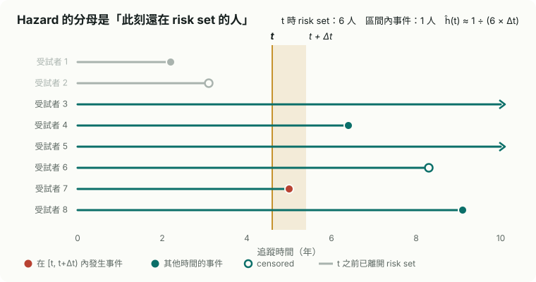
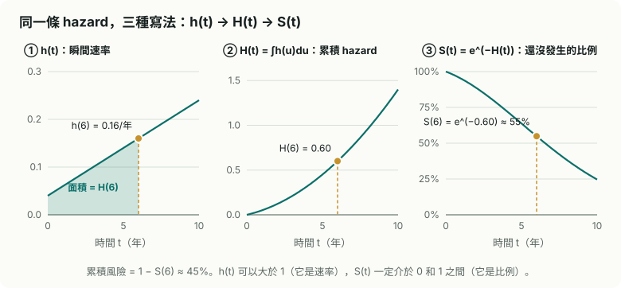
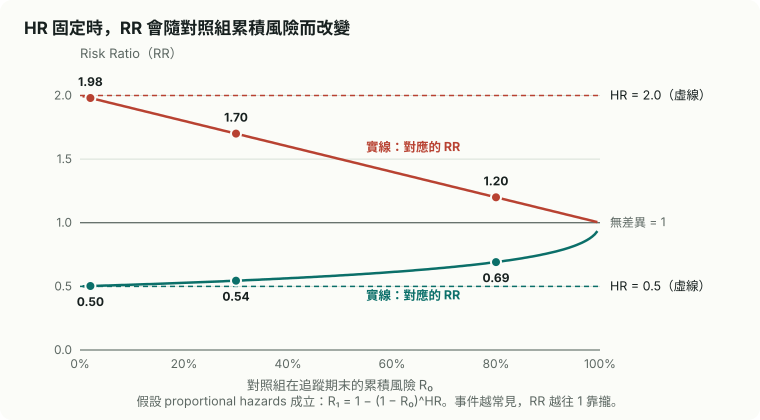
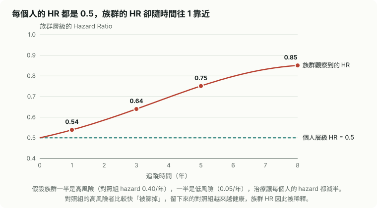
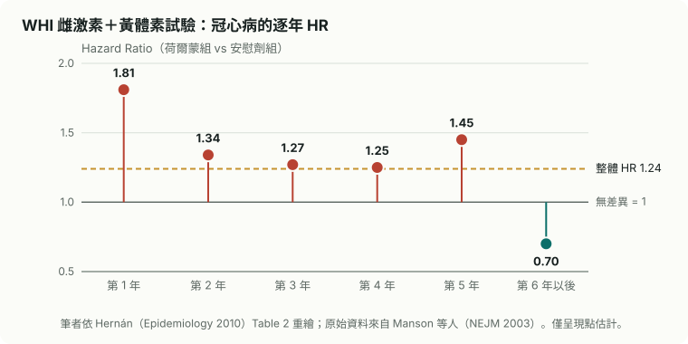

一、HR = 0.5，就是風險少一半嗎？
打開幾乎任何一篇心血管或腫瘤的臨床試驗，主要結果大概都會長這樣：「治療組的主要複合終點事件 HR 為 0.75（95% CI 0.66–0.85）」。新聞稿接著寫：「新藥讓風險降低25%。」
這句話不能說錯，但它偷偷做了一件事：把 Hazard Ratio 當成 Risk Ratio 來讀。教學06談的 RR 比的是「追蹤期末，兩組各有多少比例的人發生事件」；HR 比的卻是另一個東西：在每一個時間點，還沒發生事件的人，發生事件的速度。
這兩個量在某些情況下數值很接近，在另一些情況下卻會明顯分家；HR 本身也帶著一些 RR 沒有的假設與陷阱。這一篇會比前幾篇多用一點數學，因為 HR 的意義幾乎完全藏在定義式裡。公式不需要背，但只要把幾條式子各自在說什麼看懂，之後讀到 HR 時就會知道該追問哪些問題。
二、正式定義
1. Hazard：條件在「還沒發生」之上的瞬間速率
設 \(T\) 是一個人從 time zero（教學03）開始，到事件發生所經過的時間。Hazard function 的定義是：
這條式子可以拆成三個部分來讀：
- 分子的條件 \(T \ge t\)：只看「到時間 \(t\) 為止還沒發生事件、也還在追蹤中」的人。這群人叫做 risk set。已經發生事件的人、已經被 censored 的人，都不在分母裡。
- 分子的機率：在這群人當中，接下來一小段時間 \(\Delta t\) 內發生事件的機率。
- 除以 \(\Delta t\)：把「一小段時間內的機率」換算成「每單位時間的速率」，再讓 \(\Delta t\) 趨近於 0，得到某一瞬間的速率。

因為除以了時間，hazard 的單位是「每年」「每人年」這類 1/時間，而不是一個介於0到1之間的機率。這正好接上教學05的 Incidence Rate：Incidence Rate 是「一段期間內的事件數 ÷ 總人時」，可以把它想成某段期間的平均 hazard；hazard 則是把這段期間縮到無限短之後的「瞬間版」rate。也因為它是速率，hazard 可以大於1：一個每年 hazard 是2的事件，意思是若速率維持不變，平均半年就會發生一次，而不是「機率200%」。
2. 從 hazard 到風險：三個函數之間的關係
Hazard 本身不是風險，但可以一路換算成風險。先把 hazard 從 time zero 累加到時間 \(t\)，得到 cumulative hazard：
接著，survival function（到時間 \(t\) 仍未發生事件的比例）可以寫成：
這條式子是整篇最重要的一條，值得花一點時間看它從哪裡來。由定義可以推得 \(h(t) = -\frac{d}{dt}\ln S(t)\)：每一瞬間，存活比例都會依照當下的 hazard「按比例」減少。兩邊從0積分到 \(t\)，再利用 \(S(0)=1\)，就得到 \(\ln S(t) = -H(t)\)。
最後，教學05、06談的 Risk（cumulative incidence）就是：

以上圖為例：hazard 從每年0.04慢慢上升，0到6年的曲線下面積是 \(H(6)=0.60\)；所以6年的存活比例是 \(e^{-0.60} \approx 55\%\)，6年累積風險約45%。注意這裡不是「0.60 = 60%的風險」：當 \(H(t)\) 很小時，\(1-e^{-H} \approx H\)，cumulative hazard 和 risk 才會接近；\(H(t)\) 越大，兩者差得越多。rate 和 risk 之間的換算不是線性的，這是後面所有「HR 不等於 RR」問題的根源。
3. Hazard Ratio 與 Cox Model
有了 hazard，Hazard Ratio 的定義就很直接：在同一個時間點 \(t\)，治療組（或暴露組）的 hazard 除以對照組的 hazard。
要讓 HR 變成「一個數字」，就需要一個關鍵假設：這個比值不隨時間改變，也就是 proportional hazards（PH）假設。醫學研究最常用的 Cox proportional hazards model 正是把這個假設寫成模型：
這裡的 \(h_0(t)\) 是 baseline hazard，代表 \(x=0\) 那一組的 hazard 隨時間怎麼變化，Cox model 完全不限制它的形狀；\(e^{\beta x}\) 則是讓 hazard 整條曲線等比例放大或縮小的倍數。當 \(x\) 是「治療 = 1、對照 = 0」時：
請特別注意這一步發生了什麼：\(h_0(t)\) 在分子分母中被消掉了。這是 Cox model 最大的優點：研究者不需要知道、也不需要假設 baseline hazard 長什麼樣子，就能估計 HR。但同一件事也是 HR 最大的限制：HR 這個數字本身，完全不帶有基準風險的資訊。一個 HR = 0.75，可以出現在年發生率0.1%的族群，也可以出現在年發生率20%的族群；兩者實際能避免的事件數，天差地遠。
進階：為什麼 \(h_0(t)\) 可以不用估？Partial Likelihood 的直覺
這一小段比較技術，略過不影響後文。Kaplan-Meier 與 Cox model 的實際估計方式，教學08會完整說明。
Cox 的估計方法叫做 partial likelihood。它只在「有事件發生的時間點」問一個問題：在那一刻的 risk set \(R(t_i)\) 裡，剛好是第 \(i\) 個人發生事件的機率是多少？
同一個時間點，risk set 裡每個人的 \(h_0(t_i)\) 都一樣，所以又被消掉了。把所有事件時間點的這個比例相乘，就得到 partial likelihood，再找出讓它最大的 \(\beta\)。這也說明了一件事：Cox model 只用到事件發生的先後順序和當時的 risk set，而不是事件發生的確切時間長短。
三、為什麼 HR 不是 RR？
從 \(S_1 = S_0^{HR}\) 開始
在 PH 假設成立時，治療組在每個時間點的 hazard 都是對照組的 HR 倍，所以累積 hazard 也是 HR 倍：\(H_1(t) = HR \cdot H_0(t)\)。代回 \(S(t)=e^{-H(t)}\)：
換成追蹤期末的累積風險 \(R_1\)、\(R_0\)，就得到 HR 與 RR 的關係：
RR 不只取決於 HR，還取決於對照組本身的風險 \(R_0\)。用幾組數字代入看看：
| 對照組累積風險 \(R_0\) | HR | 治療組累積風險 \(R_1\) | RR |
|---|---|---|---|
| 2% | 0.5 | 1.0% | 0.50 |
| 10% | 0.5 | 5.1% | 0.51 |
| 30% | 0.5 | 16.3% | 0.54 |
| 50% | 0.5 | 29.3% | 0.59 |
| 80% | 0.5 | 55.3% | 0.69 |
| 30% | 2.0 | 51.0% | 1.70 |
| 80% | 2.0 | 96.0% | 1.20 |

規律很清楚：事件稀少時，HR ≈ RR；事件越常見，RR 就越往1靠攏，和 HR 差得越多。原因是風險有上限：再怎麼有害，累積風險也不能超過100%；hazard 卻沒有上限。這和教學05的 rare disease assumption 是同一種邏輯：當 \(R_0\) 很小時，\(1-(1-R_0)^{HR} \approx HR \cdot R_0\)，HR 和 RR 才能互相近似，就像 OR 只有在結果稀少時才近似 RR。
所以，「HR = 0.5，風險減半」只在事件不常見時大致成立。在一個5年死亡率達80%的晚期癌症試驗中，同樣 HR = 0.5，5年死亡風險其實是從80%降到約55%，RR 約0.69。
另一種讀法：誰先發生事件？
HR 還有一個比較少人知道、但很直觀的意義。在 PH 成立、且追蹤到兩人都發生事件的理想情況下，隨機從治療組和對照組各抽一個人，治療組那個人比較早發生事件的機率是：
推導只需要一行：\(P(T_1<T_0) = \int_0^\infty f_1(t)\,S_0(t)\,dt\)，其中 \(f_1 = h_1 S_1 = HR \cdot h_0 S_0^{HR}\)，而 \(h_0 S_0^{HR+1}\) 的積分恰好是 \(\frac{1}{HR+1}\)。
代入數字：HR = 1 時是50%，兩組誰先誰後是一半一半；HR = 0.5 時是 \(0.5/1.5 \approx 33\%\)；HR = 0.75 時約43%。換句話說，HR = 0.5 的意思是「治療組的人比較早出事的機會，從一半降到三分之一」，而不是「每個人的風險都少一半」。這個角度提醒我們，HR 本質上是在比較事件發生的速度與順序。
四、使用前提／技術細節與限制
原則一：Proportional Hazards 假設
論文只報告一個 HR，就隱含了「兩組 hazard 的比值在整段追蹤期間都一樣」。但真實世界裡，很多治療的效果本來就會隨時間改變：手術可能早期風險較高、長期才有好處；某些藥物的效果需要時間累積才會出現。
當 PH 不成立時，Cox model 仍然會給出一個數字，但這個數字變成了某種依事件分布加權的時間平均 HR，它的權重取決於各時間點發生了多少事件，也就取決於追蹤多久、何時 censoring。同一個治療，追蹤3年和追蹤10年，可能得到不同的「平均 HR」。Stensrud 與 Hernán 在 JAMA 的統計方法專欄中就指出，醫學研究中的 hazard 通常並不真正成比例，與其在意 PH 檢定的 P 值，不如直接呈現存活曲線、說清楚 HR 隨時間怎麼變化。
原則二：HR 內建的選擇偏差（Depletion of Susceptibles）
這是 HR 最微妙、也最常被忽略的限制。回到定義：hazard 的分母是 risk set，也就是「到目前為止還沒出事的人」。在隨機分派試驗中，兩組在 time zero 時可以比較；但只要治療有效，兩組 risk set 的組成就會隨時間變得不一樣。
看一個假設性的例子：族群中一半是高風險者（對照組 hazard 每年0.40），一半是低風險者（每年0.05），治療讓每一個人的 hazard 都剛好減半，也就是個人層級的 HR 永遠是0.5。但在對照組裡，高風險者出事得比較快，很快離開 risk set；幾年後，對照組 risk set 裡留下的多半是低風險者，治療組裡則還保留較多高風險者。兩組 risk set 不再可比，族群層級觀察到的 HR 就會被稀釋：

| 追蹤時間 | 0年 | 1年 | 3年 | 5年 | 8年 |
|---|---|---|---|---|---|
| 族群觀察到的 HR | 0.50 | 0.54 | 0.64 | 0.75 | 0.85 |
在這個例子裡，沒有任何一個人的治療效果隨時間變弱，但「第5年的 HR」看起來已經從0.50變成0.75。這就是 Hernán 所說的 HR「內建的選擇偏差」：即使是完美執行的隨機分派試驗，時間點特定（period-specific）的 HR 也不再有隨機分派的保護，因為它比較的是「活到那時候的人」，而誰能活到那時候，本身就受到治療影響。
這也是為什麼 HR 常被說成「不是一個容易做因果解讀的量」。方法學界對這個問題仍有討論，有學者主張在特定條件下 HR 仍可以有因果意義；但「period-specific HR 的變化，不能直接解讀成療效隨時間改變」這一點，是讀論文時最需要記住的。
原則三：搭配絕對尺度一起讀
既然 HR 不含基準風險資訊，又可能隨時間變化，解法和教學06一樣：不要只看相對尺度。比較完整的報告方式包括：
- 存活曲線（Kaplan-Meier 或調整後的 cumulative incidence curve）：直接看兩組風險隨時間怎麼分開；
- 特定時間點的 risk difference：例如「5年累積風險差 −3.2 個百分點」，連回教學06的 RD；
- Restricted mean survival time（RMST）：在一段固定追蹤期內，平均多活了（或多延後事件）多久，單位是時間，不需要 PH 假設。
五、真實文獻示範：WHI 荷爾蒙療法試驗
Hernán 在2010年於 Epidemiology 發表的評論〈The Hazards of Hazard Ratios〉，用 Women's Health Initiative（WHI）的雌激素加黃體素隨機分派試驗，說明了上面兩個問題。
在 WHI 中，荷爾蒙療法相對安慰劑，冠心病的整體 HR 是1.24（平均追蹤5.2年）。單看這個數字，會以為荷爾蒙療法在整段期間都讓冠心病 hazard 增加約24%。但如果把 HR 按追蹤年份拆開來看：

第1年的 HR 是1.81，之後逐漸降低，第6年以後甚至變成0.70。整體的1.24，其實是把這些不同時期的 HR 平均起來的結果，它掩蓋了「傷害集中在治療初期」這個臨床上很重要的訊息。
那第6年以後的0.70，代表荷爾蒙療法長期能預防冠心病嗎？Hernán 的回答是：不一定。荷爾蒙組裡容易受傷害的女性，在早期就已經發生冠心病、離開 risk set；第6年以後，兩組 risk set 的組成已經不同，所以即使荷爾蒙療法在任何時間點都沒有真正的保護作用，period-specific HR 也可能掉到1以下。這正是原則二描述的 depletion of susceptibles。他也提醒，hazard 在第5年左右「交叉」這件事本身，在實務上幾乎沒有意義；真正重要的是兩組的累積存活曲線怎麼走。
Hernán 建議的做法是：呈現（調整後的）存活曲線，或一系列「追蹤越來越久」的累積平均 HR；period-specific HR 只當作推估存活曲線的中間步驟，而不是直接拿來下結論。存活曲線還有一個好處：它直接給出絕對風險。Hernán 在文中舉例，第1年約1.8的平均 HR，對應的一年冠心病風險大約是治療組0.49%、安慰劑組0.28%，而不是49%對28%。這比單看「HR 1.8」更能讓臨床決策者理解傷害的實際大小。
六、常見誤解
1. 把 HR = 0.5 讀成「風險少一半」
HR 比的是瞬間速率，不是追蹤期末的累積風險。只有事件不常見時，HR 才近似 RR；事件越常見，RR 越往1靠攏。HR = 0.5 在5年風險80%的族群中，對應的 RR 約0.69。
2. 以為論文報告了一個 HR，就代表效果在整段期間都一樣
單一 HR 是建立在 PH 假設上的時間平均。PH 不成立時，它會隨追蹤長度與 censoring 改變。看到 HR 時，回頭找 Kaplan-Meier 曲線：兩條曲線是一路穩定分開，還是一開始重疊、後來才分開，甚至交叉？
3. 把「後期 HR 變小或變大」直接讀成「療效隨時間改變」
Period-specific HR 比較的是「活到那時候的人」，受到 depletion of susceptibles 影響。即使個人層級的效果完全固定，族群層級的 HR 也可能漂移。
4. 以為 HR 一樣，兩個研究的效益就一樣
HR 不含基準風險資訊。同樣 HR = 0.75，在高風險族群可能每100人避免好幾件事件，在低風險族群可能每1,000人才避免一件。要判斷實際效益，還是得回到絕對風險差與 NNT。
七、怎麼在論文裡讀到／判讀
看到一個 HR 時，可以依序問以下問題：
- 事件是什麼？Time zero 是哪一天？Hazard 的定義依賴 \(T\) 怎麼量，教學03談的 time zero 與 censoring 在這裡直接影響 risk set。
- 基準風險是多少？找對照組的事件率或 Kaplan-Meier 曲線的終點。若對照組累積風險不低（例如超過10%到20%），就不要把 HR 直接當 RR 讀。
- 追蹤多久？同一個 HR，在追蹤2年和追蹤10年的研究中，意義可能不同。
- PH 假設合不合理？看 Kaplan-Meier 曲線的形狀、作者有沒有報告分時期 HR、Schoenfeld residuals 或其他時間交互作用分析。曲線交叉時，單一 HR 幾乎無法代表整體結果。
- 有沒有絕對尺度？論文有沒有同時報告特定時間點的 risk difference、NNT 或 RMST？如果只有 HR，自己用對照組風險估算一下，常常會得到截然不同的印象。
- 看到 period-specific HR 時，想到 depletion of susceptibles。後期 HR 的改變，可能來自 risk set 組成的改變，而不是療效本身的改變。
八、結語
從教學04到教學06，我們處理的都是「一段期間結束時」的量：Prevalence、Risk、Odds，以及它們的差與比。Hazard Ratio 則把時間放回了每一個瞬間：它比較的是，在每一個時間點、對還沒出事的人來說，事件發生得有多快。
這個設計讓 HR 能自然處理追蹤時間長短不一與 censoring，也讓 Cox model 不必知道 baseline hazard 就能估計效果，這是它在醫學研究中無所不在的原因。但同樣的設計，也讓 HR 不含基準風險、可能隨時間改變，而且時間點特定的 HR 還帶著內建的選擇偏差。
HR 回答的是「速度」的問題；臨床決策常常需要的是「到某個時間點，有多少人會發生事件」的答案。兩者都重要，但不能互相取代。
下一篇，我們會看 Kaplan-Meier curve 與 Cox model 實際上是怎麼從資料中估計出來的：存活曲線的每一個階梯是怎麼算的、censoring 在估計中扮演什麼角色，以及 partial likelihood 在真實資料上怎麼運作。
參考文獻
- Hernán MA. The hazards of hazard ratios. Epidemiology. 2010;21(1):13–15. doi:10.1097/EDE.0b013e3181c1ea43
- Manson JE, Hsia J, Johnson KC, et al. Estrogen plus progestin and the risk of coronary heart disease. N Engl J Med. 2003;349:523–534. doi:10.1056/NEJMoa030808
- Stensrud MJ, Hernán MA. Why test for proportional hazards? JAMA. 2020;323(14):1401–1402. doi:10.1001/jama.2020.1267